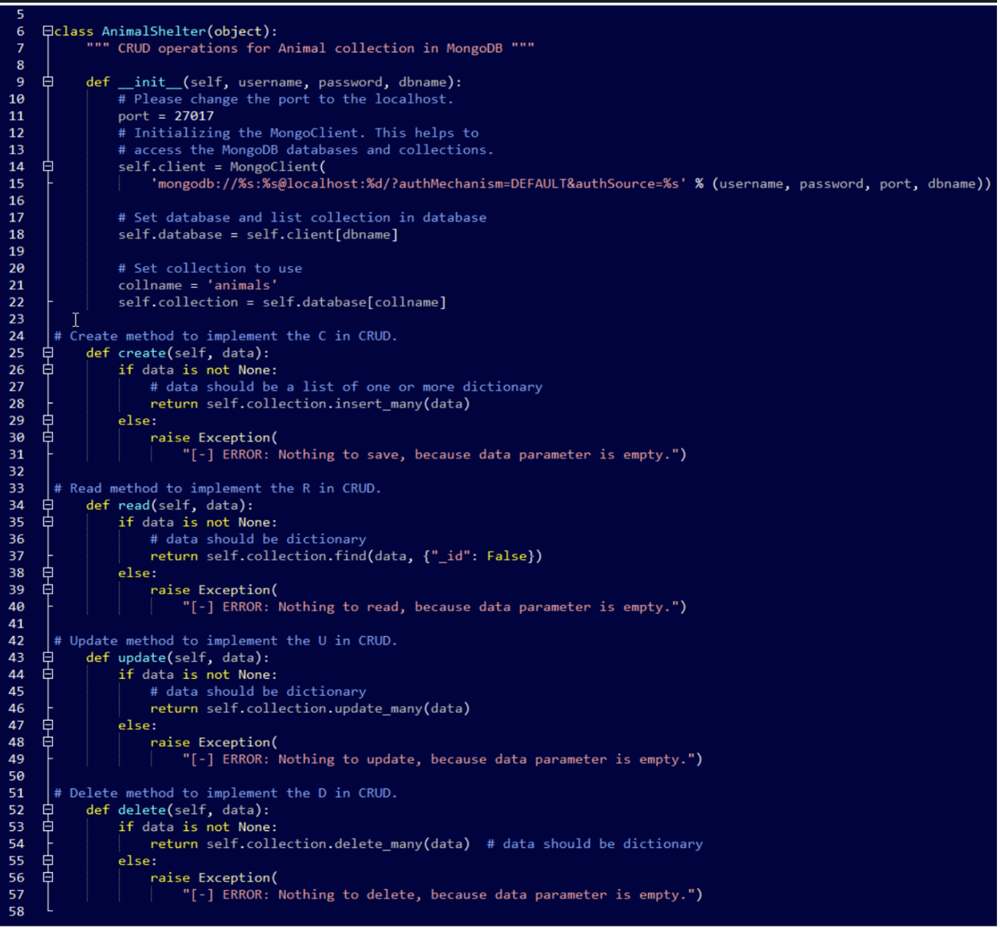
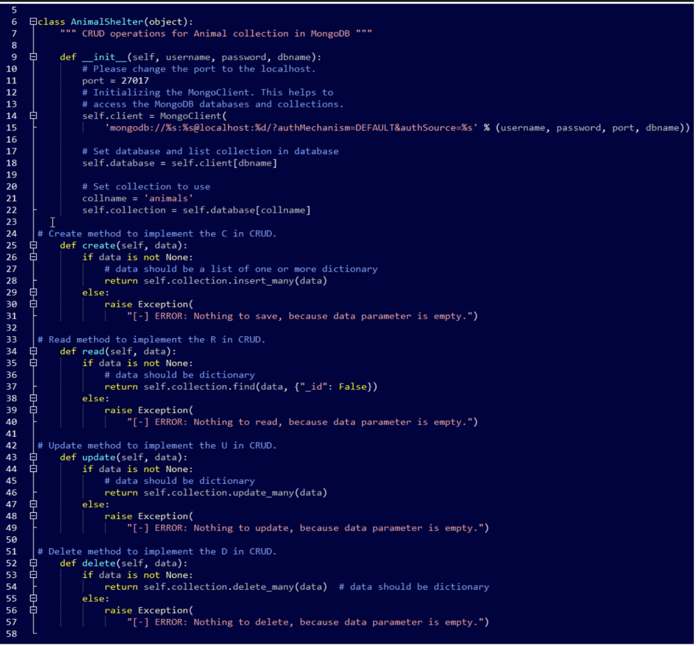

My journey through the Computer Science program at Southern New Hampshire University has been both challenging and deeply rewarding. Although I had prior experience in software engineering and had completed a coding bootcamp, I quickly realized that it wasn’t enough—I wanted a more comprehensive understanding of computer science principles and software development practices. Currently, I serve as a Project Manager at a healthcare company, and I’ve previously worked as a software engineer. This transition marked a pivotal shift in my career, requiring me to think more creatively, solve problems more effectively, and continuously adapt in a fast-paced, technology-driven environment. Pursuing this degree not only strengthened my technical foundation but also reinforced my passion for building impactful solutions in the healthcare space.
I’ve always had a deep passion for technology and a desire to make a meaningful difference in people’s lives. While I began my career focused on direct patient care, my path has since evolved to include the development of innovative medical software. With a strong foundation in healthcare and newly acquired technical skills, I’m now committed to bridging the gap between clinical insight and cutting-edge technology. My goal is to contribute to the creation of transformative digital tools that improve patient outcomes, enhance healthcare workflows, and ultimately help shape the future of the industry.
Throughout my academic journey, I encountered numerous challenges—from grappling with new programming languages to solving complex coding problems, all without the guidance of a computer science mentor. Despite these hurdles, I remained determined and resilient. Java gradually became my language of choice, serving as a strong foundation for my development skills. Along the way, I also explored Python for its simplicity and readability, C++ for its performance and structure, and MySQL for handling database operations. One of the most rewarding experiences was rebuilding and enhancing a messaging application in Sublime Text. This hands-on project allowed me to apply what I had learned in real time, reinforcing my understanding of software design and showcasing just how far I had progressed—from someone with no formal programming background to a confident and capable developer.
Repository Contents
1. Code Review Video
2. Enhancement Narratives
3. Source Code
4. Professional Self-Assessment
Code Review & Enhancements
Software Design
An initial code review was performed on the artifact. The purpose of the code review was to identify the enhancements that could be made to the code. The main enhancements that I planned were:Adding extra functionlity to the Java Code. Adding Pandas dataframe functionality instead of class management. Adding database functionality to store data before closing the application. Adding a main function to function as the application.
The main enhancement for my software design was adding code to expand the finctionality of my application. To implement this, I took my Java classes and created accompanying pseudocode. Then I enhanced the sourcde code in Java to add additional functinalities.
Algorithms and Data Structures
One significant enhancement I implemented was the addition of a main function to serve as the centralized entry point for the application. This allowed for more organized execution of the program’s logic and ensured a clear, structured flow of operations. By encapsulating the primary logic within this function, the application became more modular, maintainable, and easier to debug or extend in the future. In addition, I utilized Pandas DataFrames to efficiently manage the application's data and facilitate advanced data handling, such as filtering and search functionality. This not only improved the overall performance but also provided a more intuitive and powerful way to process and analyze user inputs and search results.
Databases
The final enhancement to my project was the integration of full CRUD (Create, Read, Update, Delete) functionality using a MongoDB database, which significantly improved the application's ability to manage data persistently. Prior to this addition, all data existed only temporarily during runtime and was lost upon closing the application. By integrating MongoDB, I enabled the application to store structured data from a Pandas DataFrame into a NoSQL database collection, allowing users to seamlessly save their session data. This enhancement makes it possible to add new entries, retrieve and view existing records, update specific fields, and delete unnecessary or outdated information—all while maintaining a scalable and efficient backend system that could be extended for future development or deployment in a real-world environment.
 
